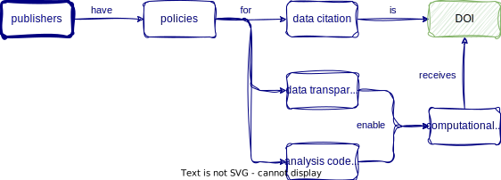

01:00
Welcome & get ready for the course
Research Beyond the Lab: Open Science and Research Methods for a Global Engineer
This class is being recorded. Access to the recording is restricted to ETH members.
Welcome! 👋
Meet the lecturers
Prof. Elizabeth Tilley
- Environmental Engineer 🔨
- Economist 📈
- Turkey Lover 🦃
- Canadian 🇨🇦
Lars Schöbitz

- Environmental Engineer 🔨
- Retired researcher 🛏
- RStudio certified instructor
- Data steward at ETHZ
Learning Goals (for the course)
Be able to use a common set of data science tools (R, RStudio IDE, Git, GitHub, tidyverse, Quarto) to illustrate and communicate the results of data analysis projects.
Learn to use the Quarto file format and the RStudio IDE visual editing mode to produce documents with citations, footnotes, cross-references, figures, and tables.
Be able to design a questionnaire to collect information that can be analysed to answer a waste-related research question that is relevant for Zurich.
Understand the main challenges associated with managing different types of waste, and how they differ between Europe and Africa.
Why all of this?





Your turn: About you
Pick an item and take notes for 1 minute:
What does the item you have picked have to do with the reason for you being here?

In pairs
Take 2 minutes each to share with your partner:
What does the item you have picked have to do with the reason for you being here?
05:00
Course Calendar
| module | date | topic |
|---|---|---|
| 1 | 22 February 2024 | Welcome & get ready for the course |
| 2 | 29 February 2024 | Data science lifecycle & Exploratory data analysis using visualization |
| 3 | 07 March 2024 | Data transformation with dplyr |
| 4 | 14 March 2024 | Data import & Data organization in spreadsheets |
| 5 | 21 March 2024 | Conditions & Dates & Tables |
| 6 | 28 March 2024 | Data types & Vectors & Pivoting |
| 04 April 2024 | Easter Break | |
| 7 | 11 April 2024 | Joining tables & Creating and publishing scholarly articles with Quarto and GitHub pages |
| 8 | 18 April 2024 | Waste Research |
| 9 | 25 April 2024 | Research Design |
| 10 | 02 May 2024 | Survey Design |
| 09 May 2024 | Auffahrt Break | |
| 11 | 16 May 2024 | Pre-test and logistics |
| 23 May 2024 | Data collection | |
| 12 | 30 May 2024 | Data analysis & report writing |
| 06 June 2024 | Project Submission Deadline | |
| 13 June 2024 | Exam |
Course structure
- My turn: Lecture segments + live coding
- Our turn: Live coding + follow along
- Your turn: Exercises in pairs
My turn: Lecture segments + live coding
- Instructor writes and narrates code out loud
- Instructor explains concepts and principles that are relevant
- Code is displayed on screen
Our turn: Live coding + follow along
- Instructor writes and narrates code out loud
- Instructor explains concepts and principles that are relevant
- Code is displayed on screen
- Learners join by writing and executing the same code
Your turn: Exercises in pairs
- Two learners work together in pairs
- One person does the typing (the driver)
- One person offers comments and suggestions (the navigator)
Getting help
(from next week), please use a pink sticky note to indicate that you have a problem. I will try to address your issue if time permits.
(from next week), during your turn exercises, please use a yellow sticky note to indicate when you have completed an exercise.
Platforms and Tools
- Course website
- R
- tidyverse R Packages
- Posit Cloud
- RStudio IDE
- Quarto publishing system
- Zotero reference management
- Google Workspace (Sheets & Forms)
Course website
Our turn: Open and bookmark the course webiste
- Open a web browser on your laptop.
- Navigate to the course website: rbtl-fs24.github.io/website/
- Create a bookmarks folder named rbtl-fs24 in your bookmarks toolbar
- Add a bookmark of the course website to the folder rbtl-fs24
05:00
Learning Objectives (for this week)
- Learners can access the Posit Cloud workspace for the course.
- Learners can use the Element chat to introduce themselves.
- Learners can open an issue on GitHub and tag the course instructor.
- Learners can clone a repository from GitHub and use the GitHub PAT to push a commit from their local repository to GitHub.
- Learners can navigate the course website and understand the learning objectives of the course.

Artwork from @juliesquid for @openscapes (illustrated by @allison_horst)
Version Control
Version Control with Git and GitHub
A way to share files with others, so they can:
- download
- re-use
- contribute
You can view the history of files, and jump back in time to any point.
Why is it useful?

Git and GitHub

- Git is a software for version control
- Created in 2005
- Popular among programmers collaboratively developing code
- Tracks changes in a set of files (directory/folder/repository)

GitHub is a hosting platform for version control using Git
Launched in 2008, aquired by Microsoft in in 2018, Microsoft for US$ 7.5 billion
100 million Users (20.5 in 2022 alone) (October, 2023)
Social media for software developers
My turn: A tour of GitHub
Sit back and enjoy!
Your turn: Get a GitHub account
- Open a web browser on your laptop.
- Navigate to the course website: rbtl-fs24.github.io/website/
- If you haven’t yet, bookmark the course website
- In the left-hand menu, clock on Module 1, then select am-01: GitHub
- Follow the instructions
- Place a yellow sticky note on your laptop when you have completed the assignment
05:00
Posit Cloud
-
-
-
-
-
-
-
Your turn: Log into Posit Cloud with GitHub account
- Open a web browser on your laptop.
- Navigate to the course website: rbtl-fs24.github.io/website/
- If you haven’t yet, bookmark the course website
- In the left-hand menu, clock on Module 1, then select am-02: Posit Cloud
- Follow the instructions
- Place a yellow sticky note on your laptop when you have completed the assignment
GitHub Authorisation
- If this is your first time logging in to Posit Cloud with your GitHub account, you will be prompted to authorize Posit Cloud to access your GitHub account information.
- Once you have authorized access, you will be redirected back to the Posit Cloud website and logged in to your account.
05:00
Hello Quarto
Meeting you where you are
I’ll assume you
do not have R or git experience
have not worked in an IDE before (e.g. RStudio IDE)
want to learn about R
want to learn about Quarto and publishing
want to learn about project management with GitHub
I’ll teach you
R
Quarto syntax and formats
Markdown
Git via RStudio GUI
GitHub issues, project management, and publishing
What is Quarto?
Quarto …
- is a new, open-source, scientific, and technical publishing system
- aims to make the process of creating and collaborating dramatically better

My turn: A tour of Quarto
Sit back and enjoy!
Take a break
Please get up and move! Let your emails rest in peace.

15:00
Photo by Blake Wisz
Your turn: md-01-exercises
- Open posit.cloud in your browser (use your bookmark).
- Open the rbt-fs24 workspace for the course.
- Click Start next to md-01-exercises.
- In the File Manager in the bottom right window, locate the
hello-quarto.qmdfile and click on it to open it in the top left window. - Render the document.
- Add your name to the
author:key in the YAML header - Render the document
- Inspect components of the document and make one more update and re-render.
- Discuss notes about updates you’ve made with your neighbor. Note any aspects of the document that are not clear after the tour and your first interaction with it.
05:00
From the comfort of your own workspace


Quarto formats
One install, “Batteries included”
- RMarkdown grew into a large ecosystem, with varying syntax.
. . .
Quarto comes “batteries included” straight out of the box
- HTML reports and websites
- PDF reports
- MS Office (Word, Powerpoint)
- Presentations (Powerpoint, Beamer,
revealjs) - Books
. . .
- Any language, exact same approach and syntax
Many Quarto formats
| Feature | R Markdown | Quarto |
|---|---|---|
| Basic Formats | ||
| Beamer | beamer_presentation | beamer |
| PowerPoint | powerpoint_presentation | pptx |
| HTML Slides | revealjs | |
| Advanced Layout | Quarto Article Layout |
Many Quarto formats
| Feature | R Markdown | Quarto |
|---|---|---|
| Cross References | Quarto Crossrefs | |
| Websites & Blogs | ||
| Books | bookdown | Quarto Books |
| Interactivity | Shiny Documents | Quarto Interactive Documents |
| Journal Articles | rticles | Journal Articles |
| Dashboards | flexdashboard | Quarto Dashboards |
Take a break
Please get up and move! Let your emails rest in peace.
15:00
Photo by Blake Wisz
Course information
Weekly Structure
| Monday | |
| Tuesday | Student hours from 14:00 to 16:00 (CET) |
| Wednesday | Assignment submission, latest by 23:59 (CET) |
| Thursday | Lecture from 12:15 to 15:00 (CET) |
| Friday |
Performance assessment
- End-of-semester exam: 50 points
- Compulsory continuous performance assessment: 50 points, of which
- Homework assignments: 20 points (n = 10)
- Capstone project: 30 points, of which
- Technical parts of submitted report: 20 points (we will communicate what we expect)
- Intellectual framing of results: 10 points (we will communicate what we expect)
Grading scheme
Table Table 1 shows the conversion from points to grades. Grades follow the ETHZ’s Grading System. Points are rounded to the nearest grade, for example:
- 97 points = 5.75
- 93 points = 5.75
- 92 points = 5.50
- 45 points = 4.00
- 44 points = 3.50
| grade | points |
|---|---|
| 6.00 | 100 |
| 5.75 | 95 |
| 5.50 | 90 |
| 5.25 | 85 |
| 5.00 | 80 |
| 4.75 | 75 |
| 4.50 | 70 |
| 4.25 | 60 |
| 4.00 | 50 |
| 3.50 | 40 |
| 3.00 | 30 |
| 2.50 | 20 |
| 2.00 | 10 |
| 1.00 | 0 |
End-of semester exam
- 2-hour final written exam
- 50 points
- all material allowed (incl. internet)
- for the use of AI tools we expect you to add a link to the prompt
- programming exercises using the R programming language
- success depends on the effort put into the compulsory continuous performance assessment
Compulsory continuous performance assessment
Homework assignments:
- 10 assignments
- assessed as pass/fail
- 2 points each
- 20 points in total
- submitted as rendered Quarto documents on GitHub
Compulsory continuous performance assessment
Capstone Project
- Data analysis project report with a dataset generated by you
- Method: Survey or Observational Study using Google Forms and Sheets
- 1 project per student, submitted as rendered Quarto document on GitHub
- 30 points in total
- 20 points for the technical parts of the submitted report
- 10 points for the intellectual framing of results
Readings
- Some required for homework assignments
- Additional readings provided to support learning
- Not graded
Policies
Class attendance
- Can’t attend in person? Inform us before the lecture
- Live streaming recording available
- Missed classes: work through the material using the recording
Policies
Use of AI tools
- Use it! (e.g. perplexity.ai has useful free features)
- Refine your prompts to get good outcomes
- Don’t trust anything it says
- Include links to your prompts
- Be thoughtful about when this tool is useful
Policies
Code of Conduct
- Follow the ETH Respect Code of Conduct
- If you experience inappropriate behaviour from us or any of your classmates, you will find contact and advice services here: respekt.ethz.ch/en/contact-and-advice-services.html
Homework assignments module 1
Module 1 documentation
Homework due date
- Homework is a pre-requsite for active participation in Module 2
- Homework assignment due: Wednesday, 28th February
Wrap-up
Thanks! 🌻
Slides created via revealjs and Quarto: https://quarto.org/docs/presentations/revealjs/ Access slides as PDF on GitHub
All material is licensed under Creative Commons Attribution Share Alike 4.0 International.